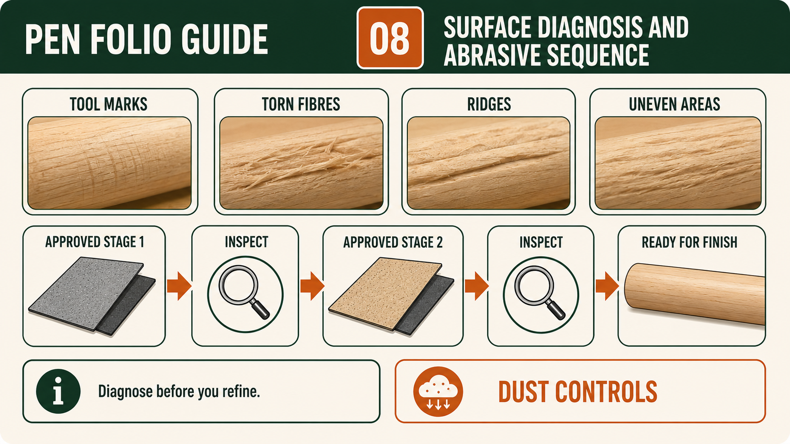

Weeks 11-12
This module
Diagnose turning marks, use the approved progressive abrasive sequence and apply only the verified finishing product.
Your work
Student details
Your entries save automatically in this browser. Use Print / Save PDF before leaving the page.
Theory 1
Diagnosing tool marks and surface defects before sanding
Inspecting the turned Pen bodies before sanding is a quality-control stage, not a quick transition between turning and finishing. The purpose is to identify visible defects while there is still an opportunity to understand them and seek an approved response. Sanding should refine a surface that has already been turned with control; it should not be treated as a way to erase every earlier mistake. Students compare both Pen bodies with the supplied kit instructions, approved references and teacher demonstration, then decide whether the surfaces are ready to progress. This protects the intended profile, grain relationship and overall quality of the project.
Common visible defects may include tool marks, torn fibres, ridges, uneven areas, scratches from earlier handling or sections that do not appear consistent with the surrounding form. Tool marks can show where the authorised turning action left a visible track. Torn fibres appear where the timber surface has not separated cleanly, while ridges may indicate that neighbouring areas were not blended evenly. Uneven sections can affect both appearance and symmetry. Students should inspect under clear, suitable lighting and view the Pen bodies from more than one angle, following the teacher-approved checking conditions rather than relying on a single quick glance.

Diagnosis means thinking about why a defect may have occurred, not simply naming what it looks like. A visible mark could relate to an earlier turning action, the way the grain responded, uneven material removal, contamination or an abnormal condition that occurred during the process. Students are not expected to invent a technical cause or correction. They should describe what they can actually observe, consider the likely stage where it developed and ask the teacher to confirm the diagnosis. This distinction matters because hiding a fault without understanding it can leave the underlying problem unchanged or create a new defect elsewhere.
A stop-check-decide cycle supports careful judgement. First, stop at the approved checkpoint and make the work safe under the current workshop procedure. Next, check the surface, profile and relationship between the two Pen bodies against the authoritative references. Then decide, with teacher guidance, whether the work is ready for sanding or whether a limited approved correction is needed. Correction should be restrained because removed timber cannot be replaced, and repeated attempts to chase one mark may alter the profile or symmetry. The teacher demonstration controls any practical response; students do not select an unverified tool, abrasive, speed or method.
Lighting and cleanliness improve the reliability of inspection. Dust and loose residue can hide shallow marks or make a surface look rougher than it is, so the work should be prepared for checking only by the approved local method. Directional or angled light can make ridges and surface changes easier to see because small high and low areas create shadows. Students should compare both Pen bodies consistently and avoid judging quality only by shine or colour. If the cause of a defect, the amount of correction or the readiness for sanding is uncertain, work stops and teacher approval is obtained before anything further is removed.
Folio evidence should show the defect, the diagnosis and the decision rather than only a polished final Pen. A useful record may include a clear photograph taken under suitable lighting, a close view of the affected area and a caption identifying the visible feature without exaggeration. The note should explain the likely cause considered, the teacher checkpoint, the approved decision and the result of the later reinspection. When no correction is required, record why the surface was judged ready for sanding. Honest before-and-after evidence demonstrates observation, restraint and quality control, and it shows that sanding followed an informed decision instead of being used to conceal faults.
- Inspect both turned Pen bodies under clear, suitable lighting before sanding.
- Identify tool marks, torn fibres, ridges, uneven areas and other visible defects accurately.
- Separate what is directly observed from a possible cause that still requires teacher confirmation.
- Use the stop-check-decide cycle and limit any correction to the teacher-approved response.
- Record the defect, decision, teacher approval and reinspection as progressive folio evidence.
Theory 2
Using a progressive approved abrasive sequence
Using a progressive approved abrasive sequence in the Pen project is about controlled refinement, not aggressive material removal. After the turning stage, the surface of the Pen bodies may show fine tool marks, slight ridges or variations that need to be reduced to achieve a consistent finish. The key principle is that each abrasive stage removes or refines the marks left by the previous stage. This sequence is determined by the approved resource, product information, teacher demonstration and workshop SOP. Students must not guess, skip or substitute stages based on appearance alone or on methods seen elsewhere.
Each stage in the sequence has a clear purpose. The earlier stages address more visible surface irregularities, while later stages refine the surface to a more uniform condition ready for finishing. If a stage is skipped, the marks from the earlier stage may remain visible and become harder to remove later. This often leads to unnecessary extra sanding, which can reduce control and affect the form of the Pen. Students should understand that more sanding is not always better; effective sanding is about using the right stage at the right time and stopping when the intended surface condition is achieved.
Inspection between stages is essential. After each approved step, students should stop and examine the surface under suitable lighting to check whether the marks from the previous stage have been reduced as expected. This is not a quick glance. It involves looking for consistent surface appearance, checking for remaining lines or uneven areas, and comparing both Pen bodies for visual consistency. If marks remain, the student should not automatically move to the next stage. Instead, they should pause, consider whether the current stage needs to continue, and seek teacher approval before proceeding.

Dust control is an important part of the abrasive process. As material is refined, fine particles are produced that can affect visibility, surface quality and workshop safety. Students should follow the approved dust management procedures as directed by the teacher and school SOP. This includes maintaining a clean work area, handling dust appropriately and ensuring that the surface is clear enough to inspect accurately between stages. Dust left on the surface can hide defects or create a misleading appearance, so cleaning and inspection are linked parts of the same process.
The approved method also emphasises restraint. Removing more material than necessary can change the form of the Pen and reduce the consistency achieved during turning. Students should focus on refining the surface rather than reshaping the object. Each stage should be deliberate and connected to a visible need. If the surface appears uniform and consistent at the approved level, further sanding may not improve the result and can introduce new inconsistencies. Teacher checkpoints ensure that the student’s judgement aligns with the approved expectations and that the work is ready for the next stage, including finishing.
Folio evidence should show the progression of the surface condition across the approved sequence. Students should record observations at key points, noting how the surface changed from one stage to the next and why they decided to continue or stop. Photographs should be supported by captions that describe the condition of the surface, the purpose of the stage and the outcome of the inspection. Strong evidence links the sequence to the final quality of the Pen, showing that the student followed an organised, approved process rather than sanding randomly or excessively.
- Follow the approved abrasive sequence from the supplied resource and teacher demonstration.
- Inspect the surface carefully between stages under suitable lighting.
- Do not skip stages or continue unnecessarily once the intended condition is achieved.
- Maintain dust control to support clear inspection and safe working conditions.
- Record observations, decisions and teacher approvals as part of folio evidence.
Theory 3
Selecting and applying the approved Pen finish from product information
Selecting a finish for the Pen project is an evidence-based decision, not a matter of choosing the product with the most attractive container or the glossiest sample. The finish must be the actual product approved by the teacher for the supplied Pen project and current workshop conditions. Students read the product label, Safety Data Sheet, workshop SOP and teacher demonstration together because each source contributes different information. The label identifies the product and intended use, the Safety Data Sheet explains hazards and controls, the SOP sets local requirements, and the demonstration shows how those requirements are applied safely in the school workshop.
Compatibility means that the approved finish suits the prepared timber surface, the project purpose and any earlier materials used in the Pen process. Students must not assume that two products are interchangeable because they look similar or are both described as finishes. An incompatible product may not bond, cure or appear as expected. The teacher confirms compatibility using the supplied project information and the actual products available locally. If the label, Safety Data Sheet or instructions seem unclear, damaged or inconsistent with the demonstration, students stop and ask. Guessing, substituting or mixing products is not an acceptable way to solve uncertainty.

Surface readiness should be checked before any finish is applied. The turned Pen bodies need to be inspected for remaining tool marks, abrasive scratches, dust, contamination, uneven areas or damage that may become more visible after finishing. A finish can change colour, sheen and contrast, but it does not reliably hide poor preparation. In some cases, it can make faults easier to see. Students should compare the surface with the approved quality references, complete the required cleaning and inspection steps, and obtain teacher approval before progressing. Readiness means the surface has met the approved standard, not simply that sanding has stopped.
Controlled application means following the approved product information and demonstration without inventing a technique, amount, coat count or timing. The aim is to produce an even result while managing the product safely and avoiding unnecessary waste. Students should organise the work area, use the controls required by the SOP and Safety Data Sheet, and protect the Pen from dust, contact or contamination during the process. If the finish behaves differently from the demonstrated example, develops an unexpected appearance or creates uncertainty about safety, the student stops, keeps others clear where required and reports the issue to the teacher before taking further action.
Curing and handling are part of finishing, not empty waiting time. A surface may look dry or glossy before it is ready to be touched, moved, inspected closely or used in the next stage. The actual product information and teacher directions control when handling is permitted. Disturbing the Pen too early may mark the surface, attract contamination or reduce the quality of protection. Students should also understand that a successful finish balances appearance and function. It should support the intended look of the timber while providing the level of protection expected by the approved project information. Gloss alone does not prove even coverage, sound curing or durable protection.
Folio evidence should show how the finish decision and quality judgement were made. Useful evidence may include the approved product being identified without copying excessive label text, a record that the Safety Data Sheet and SOP were consulted, a photograph of the surface before finishing, and a later image taken after the teacher-approved curing and handling stage. Captions should explain surface readiness, the control used, the observed appearance and the teacher checkpoint. Strong evidence compares the finished Pen with the project criteria and records any defect or correction honestly. It proves a controlled process rather than relying on one flattering final photograph.
- Confirm the exact teacher-approved finish from the product label and supplied project information.
- Use the Safety Data Sheet, workshop SOP and demonstration to identify required controls.
- Check surface readiness and obtain teacher approval before application.
- Apply, cure and handle the finish only through the approved local process.
- Judge evenness, appearance and protection rather than relying on gloss alone.
Guided practice
Weeks 11-12 knowledge checks
Choose an answer, check it and use the progressive hints and feedback to improve.
Apply your learning
Scaffolded written responses
Write first, use the feedback prompts, then compare your reasoning with the appropriate response example.
Finish the two-week block
Save your evidence
Your work saves in this browser, but browser storage is not the official submission. Save the completed page as a PDF before changing devices or clearing browser data.
No marks, answers or personal information are sent from this webpage.